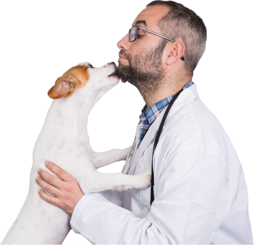

Ветеринарная клиника Dr. Drozd понимает, какое значение имеют
домашние животные в нашей жизни, а также дружбу и компанию, которые
они нам дают.
Забота о любимом друге – это не только удовольствие, но и
ответственность за их здоровье и самочувствие!
И мы рады помочь Вашим питомцам оставаться счастливыми и здоровыми.

Мы проводим профессиональные консультации по питанию и содержанию
животных. Оказываем дополнительные услуги по стрижке собак и кошек.
А к самым взыскательным пациентам мы готовы выехать на дом.
Терапия в нашей клинике
Терапия - область гуманной и ветеринарной медицины, занимающаяся непосредственно лечением
патологий, облегчением состояния больного и устранением симптомов заболеваний.
Терапевтическое отделение клиники Айболит занимается диагностикой и лечением следующих
болезней:
- органов пищеварения;
- органов сердечно-сосудистой системы;
- органов дыхательной системы;
- нервной системы;
- органов мочевыделительной системы;
- эндокринной системы;
- нарушения обмена веществ;
- кожи и ее производных;
- органов чувств;
- репродуктивной области;
- инфекционной и инвазионной природы;
- токсикологической природы.
Немного о главном
В нашей клинике имеются как врачи-терапевты общей практики, так и узкие специалисты по
ряду перечисленных областей, что дает возможность излечивать тяжелые и редкие случаи
патологий.
Врач-терапевт подходит к лечению животного комплексно, предварительно изучив его
анамнез, учитывая возраст, пол, породу, наличие хронических болезней, условия
содержания, типа кормления, оценив общее состояние питомца, полностью осмотрев его и
назначив необходимую диагностику и соответствующее лечение.
Врачи клиники имеют широкий спектр диагностических возможностей, что является идеальным
условием для постановки точного диагноза, а значит и назначения того лечения, которое
наиболее эффективно справится с данным конкретным клиническим случаем.
Некоторую диагностику можно провести тут же на месте в течение буквально нескольких
минут, что немаловажно для экстренных случаев и значительно экономят время владельцам:
- гематологический и биохимический анализы крови;
- исследование Т4 и кортизол;
- анализ газов крови;
- рентген;
- ультразвуковое исследование брюшной полости и сердца;
- микроскопия мазков и соскобов;
- люминесцентный тест на лишай;
- экспресс-анализы на основные вирусные заболевания.